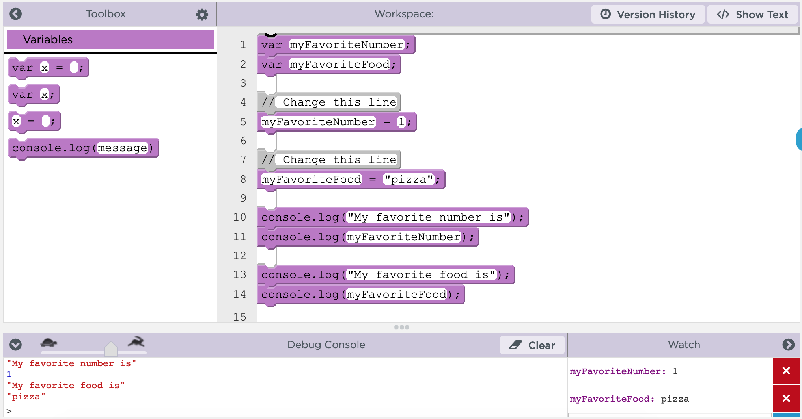
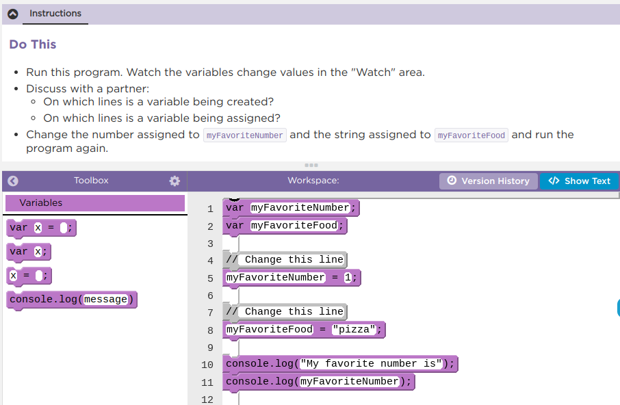
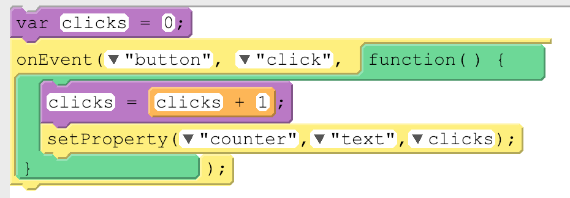
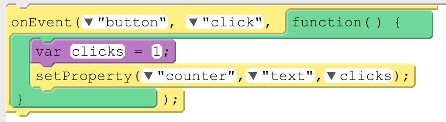
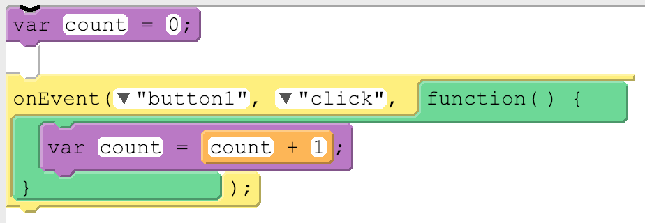

Today you will practice writing code with variables on Code.org, and you will use App Lab’s debugging tools to watch your variables change as your program runs.
Debugging is the process of finding and fixing problems in code. When something goes wrong today, work through these four stages.
What do you expect the program to do? What does it actually do? Does the problem always happen?
Are there warnings or errors? What did you change most recently? Explain your code to someone else, and look for code related to the problem.
Make one small change at a time so you can tell which change actually fixed the problem.
What have you learned? What strategies did you use? What questions do you still have?

1Slow down your code with the speed slider so you can see each line run.
2Use console.log to print values to the Debug Console.
3Add watchers to see your variables change values while the program runs.

Step 1Open Lesson 3, Level 1 on Code.org.
Step 2Complete Levels 1 through 7.
Use the debugging tools whenever your program does something you did not expect.
A short Code.org video showing what goes wrong when a variable is created inside an event.
Use var only once for each variable. You do not need to create a variable twice, and doing so can cause errors.
Create your variables at the top of your program. This keeps your code organized and easier to read for you and for others.
Create your variables outside any function or onEvent() block. Inside the event, update the variable without var.
var clicks = 0;
onEvent("button", "click", function() {
clicks = clicks + 1;
setProperty("counter",
"text", clicks);
});There are two kinds of variables, global and local. So far we have only used global variables.
A global variable is permanent and can be used anywhere in your code. It is created when var is used outside an onEvent().

A local variable is temporary and can be used only in the part of the code where it was created, such as inside an onEvent(). It is deleted once the event is done running. It is created when var is used inside an onEvent().

Local variables will be useful later, but for now they are most likely to cause confusion. The most common problem is accidentally using var inside an onEvent() or function, like this:

It looks like there is only one variable here, but there are actually two: a global count and a local count. Changing one has no effect on the other.
To avoid this, do not use var inside an onEvent() or function. If you hit a tricky bug, check whether you accidentally created a local variable.
Answer three quick questions about where variables are created and what happens to their values.
This course teaches the principles of computer science, so we need to learn the computer scientist’s main tool: programming. But programming can happen in many different languages.
AP CSP lets each teacher choose the language. In our class we use JavaScript in Code.org’s App Lab.
It would be difficult to write an exam for every possible programming language, so the College Board did not try. Instead, they made their own language, called AP Pseudocode, that anyone can understand with a little practice.
var score = 0;
score = score + 1;
console.log(score);score ← 0
score ← score + 1
DISPLAY(score)The ideas are the same. AP Pseudocode uses an arrow ← for assignment, so score ← 0 reads as “score gets 0.”
Levels 11 and 12 on Code.org show you what to expect from AP Pseudocode questions. On the exam you will get a reference sheet like the one in these levels. Use it to step through the code and answer each question.
Complete the remaining levels on Code.org.
Level 10 is a choice level, so choose the app you want to work on.
Levels 11 and 12 are the examples of AP Pseudocode questions.
Fill in your activity guide as you work through these levels.